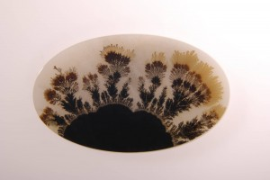

Alguns dias, algumas coisas, outras coisas…
Olá a todos!
Como vão? 
Então, faltam poucos (9) dias pra irmos pra Alemanha! Yay…
Está tudo quase pronto, estou terminando os experimentos, os power points… acho que estou precisando viajar, ando pensando demais ultimamente, em coisas que não são úteis nem produtivas, mas isso é algo que se contorna facilmente (ao menos espero que seja ^^).
Estava estudando fractais, achei coisas muito interessantes, como um padrão de crescimento de cristais (de óxido de manganês e cobre) em rochas, são bonitos (e úteis, parecem muito com o crescimento das bactérias e dos fluidos \o/)…
Mas deixando as coisas mais aleatórias de lado, consegui fazer coisas interessantes hoje, como descobrir que meu grau do óculos não aumentou (\o/) e escolher um novo modelo de óculos, pra ter um reserva pra viagem (eu adoro óculos grandes… adoro mesmo :D)… isso foi legal ^^
E também apresentei um dos problemas, falei com bastante calma e deu 12 minutos e pouco, com algumas pausas pra comentários (pensei que ia dar em torno dos 15min ou algo assim). Isso me deixou feliz.
Consegui encher meu cartão da câmera… de 16GB. O.o
Ok, tinha uns vídeos de 2 minutos do IYPT em HD, mas ainda assim! 16GB… haha
Bom, de qualquer forma, as coisas vão bem! Falta pouco!
Estou pensando em fazer desse blog uma espécie de diário quando eu estiver na Alemanha, acho que vai ser divertido depois pra quem estiver lendo (e pra mim também, minha memória não é tão boa haha) e… fotos! Vou upar mais algumas fotos pro álbum! (Ainda as da EOQ… tirei mais algumas nos últimos dias do curso ^^)
Até mais pra vocês!
Abraços!


{kind=link}
9 dias! \o/